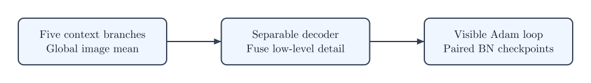
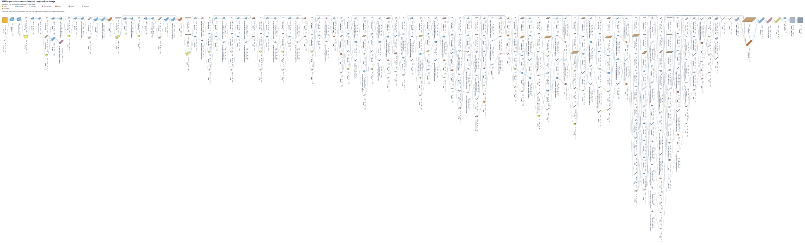
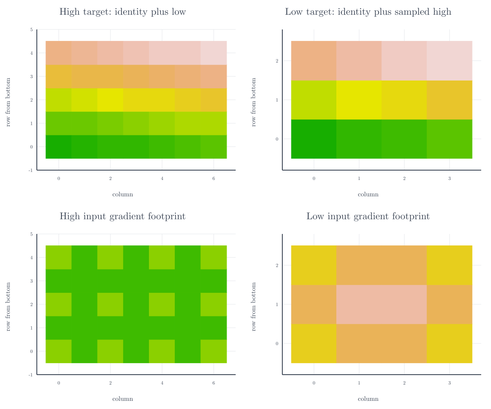
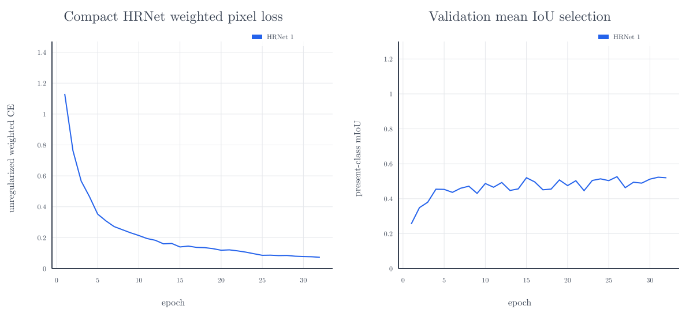
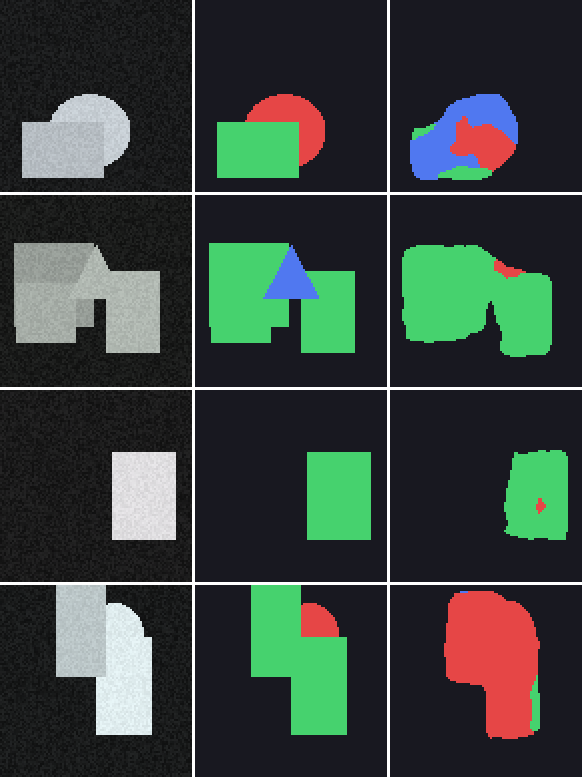
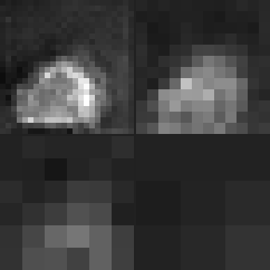
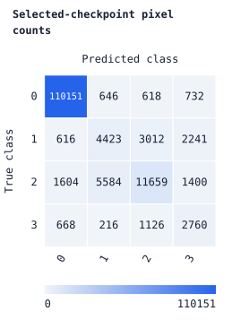
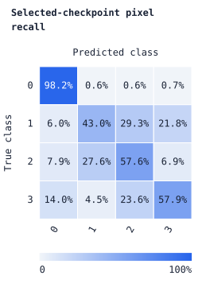

HRNet persistent resolution and repeated exchange
Abstract
Accurate pixel labels need broad context while retaining spatial detail. HRNet keeps several resolutions active and repeatedly exchanges their features. This report checks odd-grid route values and derivatives,then visibly fits the complete compact tensor model and inspects its held-out masks and streams.
Source example: examples/cpp/source/nn/1_convolutional_neural_networks/1.7_segmentation/hrnet.cpp.
The method
Persistent high-to-low streams exchange by projected bilinear upsampling or learned stride2 chains. Repeated sum/ReLU fusion supplies every target with every source. Final aligned concatenation predicts image-sized logits;explicit Adam optimizes all routes with paired BN checkpoints.
The concept diagram below is drawn by dm::graphics::Diagram. Its editable C++
source is the complete block below; regeneration uses the same datamunge toolchain
as the numerical examples. Exports consume the saved local SVG.
#include <dm/dm.hpp>
int main() {
std::filesystem::create_directories("build");
dm::graphics::Diagram diagram;
diagram.node("n0", {0.0, 0}, "Parallel streams\nKeep fine detail");
diagram.node("n1", {5.2, 0}, "Repeated exchange\nAll source features");
diagram.node("n2", {10.4, 0}, "Visible Adam loop\nRestore and inspect");
diagram.edge("n0", "n1").edge("n1", "n2");
diagram.save_svg("build/hrnet_concept.svg");
}
Executed tensor architecture
This figure executes the inference configuration shown in the code, using a zero-valued shape probe without fitting or loading a checkpoint. Named stage boundaries group whole subgraphs where available; other nodes retain functional-layer detail. Exact batch-inclusive shapes and reachable parameter totals come from the trace. Shared linear scales map spatial dimensions and channel counts to blocks; the one-pixel visibility floor is disclosed in the legend. Labels use compact monospace text, rotate counterclockwise and sit beside their own glyphs. Arrows flow left to right; wide diagrams scroll at native size on the website.
#include <dm/dm.hpp>
int main() {
namespace n = dm::nn;
namespace m = n::models;
n::set_num_threads(2);
std::filesystem::create_directories("build");
n::ParameterStore p(17), state(18);
m::HRNetConfig c;
c.classes = 4;
c.width = 8;
c.stem_width = 16;
c.stage1_width = 16;
c.stage1_blocks = 2;
c.blocks = 2;
c.modules = {1, 1, 1};
n::Module architecture_model(
[&](const n::Tensor& image) { return m::HRNet(p, state, image, c).logits; },
"HRNet persistent resolution and repeated exchange");
n::ModelPlotOptions options;
options.style = n::ModelPlotStyle::Flow;
options.detail = n::ModelPlotDetail::Blocks;
options.labels = {.type = n::ModelPlotLabel::NameAndShape, .size = 12, .wrap = 24};
options.spacing = {.layer = 24, .lane = 12, .label = 8, .margin = 20};
options.sizing.spatial_size = 96;
options.sizing.channel_size = 42;
options.sizing.minimum_extent = 1;
options.opacity = .8;
const auto diagram = architecture_model.plot(n::zeros({1, 64, 64, 3}), options);
diagram.save_svg("build/hrnet_architecture.svg");
std::print(
"{} displayed nodes; {} reachable learned values.\n",
diagram.nodes().size(),
diagram.parameter_count());
}346 displayed nodes; 382580 reachable learned values.

A controlled odd-grid exchange with exact route arithmetic
HRNet keeps several resolutions active in parallel. Every exchange module routes each source into each target stream. Low-to-high routes project1x1/BN then use corner-aligned bilinear resize. High-to-low routes chain3x3 stride2 convolutions,with ReLU except after the final step. Identity routes retain their stream. Each target sums all routes,then ReLU.
The following fixed-weight example has a5x7 high stream containing1..35 and a3x4 low stream containing2. Identity1x1 projection and centre-tap3x3 downsampling yield high+2 and low+high[::2,::2]. Their sums are700 and240. The two source-gradient sums are47 each:35 identity plus12 subsampled terms for high,and12 identity plus35 resized terms for low. Positive values keep ReLU derivatives unambiguous. Native independent interpolation/subsampling checks also verify every source value and derivative on these odd grids.
#include <dm/dm.hpp>
int main() {
namespace n = dm::nn;
namespace m = n::models;
n::ParameterStore p(17), state(18);
m::ResNetNormConfig norm;
norm.scale = true;
norm.epsilon = 1e-5;
auto high = n::arange(1, 36).reshape({1, 5, 7, 1}).requires_grad_(),
low = n::full({1, 3, 4, 1}, 2.).requires_grad_();
{
n::NoGradGuard guard;
m::HRFuse(p, state, "fuse", {high, low}, {1, 1}, norm);
}
for (const auto &name : p.names()) {
const auto shape = p.at(name).shape();
if (name.ends_with("/W")) {
if (shape[0] == 1)
p.set(name, n::ones(shape));
else
p.set(name, n::equal(n::arange(0, 9), 4.).to(n::DType::Float32).reshape(shape));
} else if (name.ends_with("/gamma"))
p.set(name, n::full(shape, std::sqrt(1. + norm.epsilon)));
}
const auto output = m::HRFuse(p, state, "fuse", {high, low}, {1, 1}, norm);
const auto gradient = n::grad(n::sum(output[0]) + n::sum(output[1]), {high, low});
if (std::abs(n::sum(output[0]).item() - 700) > 1e-4 ||
std::abs(n::sum(output[1]).item() - 240) > 1e-4 ||
std::abs(n::sum(gradient[0]).item() - 47) > 1e-5 ||
std::abs(n::sum(gradient[1]).item() - 47) > 1e-5)
return 1;
auto a = n::plot_tensor_map(n::reverse(output[0].reshape({5, 7}), {0}), 0, 40),
b = n::plot_tensor_map(n::reverse(output[1].reshape({3, 4}), {0}), 0, 40),
c = n::plot_tensor_map(n::reverse(gradient[0].reshape({5, 7}), {0}), 0, 6),
d = n::plot_tensor_map(n::reverse(gradient[1].reshape({3, 4}), {0}), 0, 6);
a.title("High target: identity plus low");
b.title("Low target: identity plus sampled high");
c.title("High input gradient footprint");
d.title("Low input gradient footprint");
std::filesystem::create_directories("build");
dm::graphics::RLayout::create(2, 2)
.add(a)
.add(b)
.add(c)
.add(d)
.size(1200, 1000)
.fit_panels()
.save_svg("build/hrnet_exchange.svg");
std::print("Fixed odd-grid exchange sums700/240;input gradient sums47/47. Native "
"independent all-value/interpolation/subsample derivatives pass. No optimizer or "
"fitting in this fixture.\n");
}Fixed odd-grid exchange sums700/240;input gradient sums47/47. Native independent all-value/interpolation/subsample derivatives pass. No optimizer or fitting in this fixture.

Persistent streams and full W32 graph
Two stride2 stems and four64-width bottlenecks precede2/3/4 parallel streams of widths32/64/128/256. Stage module counts1/4/3 give eight all-to-all exchanges; each module has four basic blocks per branch. Every stream remains active. Final branches resize to the stride4 grid,concatenate480 channels,project 1x1/BN/ReLU and classify linearly before restoring image size.
The full W32/21-class graph executes29,546,997 learned/58,304 moving-state scalars and all920 learned tensor gradients at33px below. This is an initialized graph check,not a pretrained benchmark. Compact W8 uses stem16,stage1width16/ two bottlenecks,two basic blocks per branch and one module per stage. It retains all four resolutions with382,580 learned scalars. Native96/97px checks require every compact derivative finite and nonzero.
#include <dm/dm.hpp>
int main() {
namespace n = dm::nn;
namespace m = n::models;
n::set_num_threads(2);
{
n::ParameterStore p(17), state(18);
const auto net = m::HRNet(
p, state, n::sin(.13 * n::arange(0, 33 * 33 * 3)).reshape({1, 33, 33, 3}), {}, true);
const auto g = n::grad(n::mean(n::square(net.logits)), p.parameters());
if (p.count() != 29546997 || state.count() != 58304 || g.size() != 920 ||
net.fusion_modules != 8 || net.branches.size() != 4 ||
p.at("head/project/W").shape() != n::Shape{1, 1, 480, 480})
return 1;
for (const auto &v : g)
if (!v.defined() || !std::isfinite(n::sum(n::square(v.to(n::DType::Float64))).item()))
return 1;
std::print("Full HRNetV2 W32:{} learned/{} BN state scalars,all{} finite defined "
"gradients at33px,eight exchanges/four branches.\n",
p.count(), state.count(), g.size());
}
n::ParameterStore p(17), state(18);
m::HRNetConfig c;
c.classes = 4;
c.width = 8;
c.stem_width = 16;
c.stage1_width = 16;
c.stage1_blocks = 2;
c.blocks = 2;
c.modules = {1, 1, 1};
for (int side : {96, 97}) {
const auto net = m::HRNet(p, state, n::zeros({1, side, side, 3}), c);
if (p.count() != 382580 || net.logits.shape() != n::Shape{1, side, side, 4} ||
net.fusion_modules != 3)
return 1;
std::print("Compact{}px:{} learned/{} state scalars,branches", side, p.count(),
state.count());
for (const auto &branch : net.branches)
std::print(" {}x{}x{}", branch.shape()[1], branch.shape()[2], branch.shape()[3]);
std::print(";exact input-aligned logits.\n");
}
}Full HRNetV2 W32:29546997 learned/58304 BN state scalars,all920 finite defined gradients at33px,eight exchanges/four branches. Compact96px:382580 learned/3744 state scalars,branches 24x24x8 12x12x16 6x6x32 3x3x64;exact input-aligned logits. Compact97px:382580 learned/3744 state scalars,branches 25x25x8 13x13x16 7x7x32 4x4x64;exact input-aligned logits.
Actual fitting images and a visible whole-model Adam loop
The tensor generator supplies64 fitting/16 validation/16 test96px RGB shape scenes,seeds11/22/33. Brightness,noise and tint are class-independent;later objects occlude earlier labels. Tensor RNG changes the old mt19937 fixed-seed pixels. Palette: background dark,circle red,rectangle green,triangle blue. The first four actual fitting image/mask pairs appear below.
#include <dm/dm.hpp>
int main() {
namespace n = dm::nn;
namespace m = n::models;
const auto data = m::TensorSegmentationShapes(64, 96, 11);
std::vector<n::Tensor> gallery;
const auto colored = m::ColorSegmentationLabels(n::slice_axis(data.labels, 0, 0, 4));
for (int i = 0; i < 4; ++i) {
gallery.push_back(n::slice_axis(data.images, 0, i, i + 1));
gallery.push_back(n::slice_axis(colored, 0, i, i + 1));
}
std::filesystem::create_directories("build");
n::save_image_grid(n::concat(gallery, 0), "build/hrnet_data.png", 2, 0., 1., 3, 1., 2);
const auto weights = m::SegmentationClassWeights(data.labels, 4);
std::print(
"64 fitting RGB images96x96; classes0 background,1 circle,2 rectangle,3 triangle. "
"Fit-only inverse-square-root pseudocount weights {:.6f}/{:.6f}/{:.6f}/{:.6f}. "
"Noise,tint and brightness are class-independent; later objects occlude earlier masks. "
"Tensor RNG changes fixed-seed pixels relative to the old mt19937 generator.\n",
weights.at({0}), weights.at({1}), weights.at({2}), weights.at({3}));
}64 fitting RGB images96x96; classes0 background,1 circle,2 rectangle,3 triangle. Fit-only inverse-square-root pseudocount weights 1.149431/3.477891/3.045941/4.357872. Noise,tint and brightness are class-independent; later objects occlude earlier masks. Tensor RNG changes fixed-seed pixels relative to the old mt19937 generator.

Every learned leaf is warmed before Adam(.001). All stems,residual paths,
projection/exchange routes,BN affine leaves and classifier fit32 epochs,batch4,
512 visible updates. Fit-only inverse-square-root pixel weights include
pseudocount1;stable weighted CE normalizes by pixel-weight sum. Explicit
kernel L2 adds .00005*sum(kernel²) while biases/BN affine parameters remain
optimized outside that penalty. Moving BN moments update once per training
forward. Strict validation mean IoU selects paired learned/BN checkpoints;
restoration reproduces the selected score before test evaluation. No dataset
split or fitting loop is hidden in a helper.
#include <dm/dm.hpp>
int main() {
int rendered_confusions = 0;
namespace n = dm::nn;
namespace m = n::models;
n::set_num_threads(2);
const auto fit = m::TensorSegmentationShapes(64, 96, 11),
validation = m::TensorSegmentationShapes(16, 96, 22),
test = m::TensorSegmentationShapes(16, 96, 33);
const auto weights = m::SegmentationClassWeights(fit.labels, 4);
std::vector<double> epochs;
for (int epoch = 1; epoch <= 32; ++epoch)
epochs.push_back(epoch);
auto loss_plot = dm::graphics::RPlot::create(), score_plot = dm::graphics::RPlot::create();
const std::array<dm::graphics::RGB, 3> colors = {{{37, 99, 235}, {22, 163, 74}, {220, 38, 38}}};
int color_index = 0;
double max_loss = 0;
std::filesystem::create_directories("build");
std::filesystem::create_directories("figures");
for (int variant : {1}) {
n::ParameterStore p(17), state(17);
m::HRNetConfig config;
config.classes = 4;
config.width = 8;
config.stem_width = 16;
config.stage1_width = 16;
config.stage1_blocks = 2;
config.blocks = 2;
config.modules = {1, 1, 1};
const auto forward = [&](const n::Tensor& images, bool training) {
return m::HRNet(p, state, images, config, training).logits;
};
// Create every learnable convolution/score leaf before Adam captures the store.
{
n::NoGradGuard guard;
forward(n::slice_axis(fit.images, 0, 0, 1), false);
}
n::OptimizerConfig adam_config;
adam_config.kind = n::OptimizerKind::Adam;
n::Optimizer adam(p, .001, adam_config);
n::BatchOrder batches(64, 4, 29);
std::vector<n::Tensor> kernels;
for (const auto& leaf : p.parameters())
if (leaf.dim() > 1)
kernels.push_back(leaf);
const std::string prefix = "build/hrnet_" + std::to_string(variant);
double best = -1;
int selected = 0, updates = 0;
std::vector<double> losses, miou;
const auto evaluate = [&](const m::TensorSegmentationData& data) {
n::NoGradGuard guard;
auto confusion = n::zeros({4, 4}, n::DType::Int64);
for (int first = 0; first < data.images.shape()[0]; first += 8) {
const auto end = std::min<std::int64_t>(first + 8, data.images.shape()[0]);
const auto logits = forward(n::slice_axis(data.images, 0, first, end), false);
confusion =
confusion + m::SegmentationPredictionMetrics(
n::argmax(logits, 3), n::slice_axis(data.labels, 0, first, end), 4)
.confusion;
}
return m::SegmentationConfusionMetrics(confusion);
};
std::print(
"Variant{}: {} learned scalars, paired BN state. Fit-only weights "
"{:.6f}/{:.6f}/{:.6f}/{:.6f}.\n",
variant,
p.count(),
weights.at({0}),
weights.at({1}),
weights.at({2}),
weights.at({3}));
std::print(
"| variant | epoch | weighted pixel CE | validation mIoU |\n|---:|---:|---:|---:|\n");
for (int epoch = 1; epoch <= 32; ++epoch) {
batches.begin_epoch();
double total = 0;
std::size_t seen = 0;
for (auto rows = batches.next(); !rows.empty(); rows = batches.next()) {
const auto batch = m::TensorSegmentationBatch(fit, n::from_vector(rows));
const auto logits = forward(batch.first, true);
const auto ce = m::SegmentationCrossEntropy(logits, batch.second, 4, weights);
n::Tensor penalty = n::zeros({});
for (const auto& kernel : kernels)
penalty = penalty + n::sum(n::square(kernel));
if (!std::isfinite(ce.item()))
return 1;
total += ce.item() * rows.size();
seen += rows.size();
adam.minimize(ce + .00005 * penalty);
++updates;
}
const auto metric = evaluate(validation);
losses.push_back(total / double(seen));
miou.push_back(metric.mean_iou.item());
if (miou.back() > best) {
best = miou.back();
selected = epoch;
p.save(prefix + "_best.npz");
state.save(prefix + "_best_state.npz");
}
std::print("| {} | {} | {:.6f} | {:.6f} |\n", variant, epoch, losses.back(), miou.back());
}
p.load(prefix + "_best.npz");
state.load(prefix + "_best_state.npz");
const auto restored = evaluate(validation), metric = evaluate(test);
{
n::NoGradGuard guard;
std::vector<n::Tensor> heldout_predictions;
for(std::int64_t first=0;first<test.images.size(0);first+=8){const auto end=std::min(first+8,test.images.size(0));heldout_predictions.push_back(n::argmax(forward(n::slice_axis(test.images,0,first,end),false),3));}
n::save_npz("build/hrnet_pixels_"+std::to_string(rendered_confusions)+".npz",{{"truth",test.labels},{"prediction",n::concat(heldout_predictions,0)},{"counts",metric.confusion},{"metrics",n::stack({metric.pixel_accuracy,metric.mean_iou},0)}});
}
const auto count_matrix = n::ConfusionMatrix::from_counts(metric.confusion);
const auto index = std::to_string(rendered_confusions++);
count_matrix.save_svg(
"build/hrnet_confusion_api_" + index + ".svg",
{.title = "Selected-checkpoint pixel counts"});
count_matrix.save_svg(
"build/hrnet_confusion_api_" + index + "_normalized.svg",
{.title = "Selected-checkpoint pixel recall",
.normalization = n::ConfusionMatrixNormalization::True});
if (std::abs(restored.mean_iou.item() - best) > 1e-12 || updates != 512)
return 1;
n::NoGradGuard guard;
std::vector<n::Tensor> gallery;
const auto prediction = n::argmax(forward(n::slice_axis(test.images, 0, 0, 4), false), 3);
const auto truth = m::ColorSegmentationLabels(n::slice_axis(test.labels, 0, 0, 4)),
colored = m::ColorSegmentationLabels(prediction);
for (int i = 0; i < 4; ++i) {
gallery.push_back(n::slice_axis(test.images, 0, i, i + 1));
gallery.push_back(n::slice_axis(truth, 0, i, i + 1));
gallery.push_back(n::slice_axis(colored, 0, i, i + 1));
}
const auto image_name = "hrnet_predictions_" + std::to_string(variant) + ".png";
n::save_image_grid(n::concat(gallery, 0), "build/" + image_name, 3, 0., 1., 3, 1., 2);
std::filesystem::copy_file(
"build/" + image_name,
"figures/" + image_name,
std::filesystem::copy_options::overwrite_existing);
const auto branches =
m::HRNet(p, state, n::slice_axis(test.images, 0, 0, 1), config, false).branches;
std::vector<n::Tensor> maps;
double high = 0;
for (const auto& branch : branches) {
const auto map = n::mean(branch, {3}, true);
high = std::max(high, n::max(map).item());
maps.push_back(n::resize_nearest(map, {96, 96}));
}
n::save_image_grid(n::concat(maps, 0), "build/hrnet_branches.png", 2, 0., high, 3, 1., 2);
std::filesystem::copy_file(
"build/hrnet_branches.png",
"figures/hrnet_branches.png",
std::filesystem::copy_options::overwrite_existing);
std::print(
"Restored four branch mean-activation maps24/12/6/3px,nearest-expanded96px,shared "
"display range[0,{:.6f}]. These are feature activations,not class scores.\n",
high);
const auto color = colors[color_index++];
const auto name = "HRNet " + std::to_string(variant);
loss_plot.lines(epochs, losses, name, color);
score_plot.lines(epochs, miou, name, color);
max_loss = std::max(max_loss, *std::max_element(losses.begin(), losses.end()));
std::print(
"Variant{} restored epoch{}: validation mIoU {:.6f}; test pixel accuracy "
"{:.6f}, mean IoU {:.6f}; per-class IoU(background,circle,rectangle,triangle) "
"{:.6f}/{:.6f}/{:.6f}/{:.6f}. {} explicit Adam updates.\n",
variant,
selected,
best,
metric.pixel_accuracy.item(),
metric.mean_iou.item(),
metric.iou.at({0}),
metric.iou.at({1}),
metric.iou.at({2}),
metric.iou.at({3}),
updates);
}
loss_plot.title("Compact HRNet weighted pixel loss")
.x_label("epoch")
.y_label("unregularized weighted CE")
.y_limits(0, max_loss * 1.3);
score_plot.title("Validation mean IoU selection")
.x_label("epoch")
.y_label("present-class mIoU")
.y_limits(0, 1.3);
dm::graphics::RLayout::create(1, 2)
.add(loss_plot)
.add(score_plot)
.size(1200, 550)
.fit_panels()
.save_svg("build/hrnet_training.svg");
}Variant1: 382580 learned scalars, paired BN state. Fit-only weights 1.149431/3.477891/3.045941/4.357872.
| variant | epoch | weighted pixel CE | validation mIoU |
|---|---|---|---|
| 1 | 1 | 1.130311 | 0.255189 |
| 1 | 2 | 0.762766 | 0.349039 |
| 1 | 3 | 0.566038 | 0.379723 |
| 1 | 4 | 0.466094 | 0.454413 |
| 1 | 5 | 0.352628 | 0.453429 |
| 1 | 6 | 0.308835 | 0.436443 |
| 1 | 7 | 0.271754 | 0.459890 |
| 1 | 8 | 0.251599 | 0.471642 |
| 1 | 9 | 0.231547 | 0.430428 |
| 1 | 10 | 0.214030 | 0.486960 |
| 1 | 11 | 0.194480 | 0.465797 |
| 1 | 12 | 0.183166 | 0.492737 |
| 1 | 13 | 0.160069 | 0.447195 |
| 1 | 14 | 0.162697 | 0.456284 |
| 1 | 15 | 0.139977 | 0.520071 |
| 1 | 16 | 0.145560 | 0.496369 |
| 1 | 17 | 0.137232 | 0.450991 |
| 1 | 18 | 0.135537 | 0.455175 |
| 1 | 19 | 0.129015 | 0.507409 |
| 1 | 20 | 0.118762 | 0.475017 |
| 1 | 21 | 0.121144 | 0.503045 |
| 1 | 22 | 0.114623 | 0.446255 |
| 1 | 23 | 0.106443 | 0.504503 |
| 1 | 24 | 0.096020 | 0.513722 |
| 1 | 25 | 0.085956 | 0.503510 |
| 1 | 26 | 0.086814 | 0.526076 |
| 1 | 27 | 0.084109 | 0.463154 |
| 1 | 28 | 0.084936 | 0.494334 |
| 1 | 29 | 0.080098 | 0.489257 |
| 1 | 30 | 0.078031 | 0.512036 |
| 1 | 31 | 0.076635 | 0.523009 |
| 1 | 32 | 0.072818 | 0.519781 |
Restored four branch mean-activation maps24/12/6/3px,nearest-expanded96px,shared display range[0,7.662947]. These are feature activations,not class scores. Variant1 restored epoch26: validation mIoU 0.526076; test pixel accuracy 0.874790, mean IoU 0.497492; per-class IoU(background,circle,rectangle,triangle) 0.957543/0.264249/0.466304/0.301870. 512 explicit Adam updates.

Compare pixel accuracy, mean IoU, and the per-class counts above. The prediction gallery shows where frequent background pixels and confused foreground classes contribute to those metrics.


Native confusion matrices
These matrices use the held-out predictions from the executed program above.
The native ConfusionMatrix SVG API labels exact counts with true classes
running from top to bottom and predicted classes from left to right.


Regenerate adjacent views from this run
#include <dm/dm.hpp>
int main(){std::filesystem::copy_file("build/hrnet_branches.png","build/export_hrnet_branches.png",std::filesystem::copy_options::overwrite_existing);}#include <dm/dm.hpp>
int main(){std::filesystem::copy_file("build/hrnet_confusion_api_0.svg","build/export_hrnet_confusion_api_0.svg",std::filesystem::copy_options::overwrite_existing);}#include <dm/dm.hpp>
int main(){std::filesystem::copy_file("build/hrnet_confusion_api_0_normalized.svg","build/export_hrnet_confusion_api_0_normalized.svg",std::filesystem::copy_options::overwrite_existing);}#include <dm/dm.hpp>
int main(){std::filesystem::copy_file("build/hrnet_predictions_1.png","build/export_hrnet_predictions_1.png",std::filesystem::copy_options::overwrite_existing);}Conclusion
The executed tables and prediction galleries above describe the current selected checkpoint. Assess localization, class errors and overlap quality together with validation selection and the bounded fitting budget.
References
- [Wang et al., Deep High-Resolution Representation Learning for Visual Recognition](https://arxiv.org/abs/1908.07919).
- [Authors’ HRNet semantic-segmentation model](https://github.com/HRNet/HRNet-Semantic-Segmentation/blob/HRNet-OCR/lib/models/seg_hrnet.py).